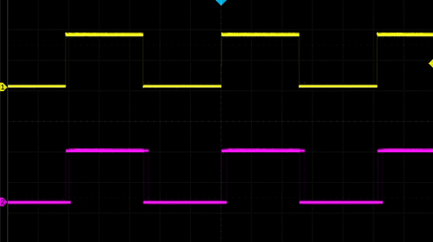
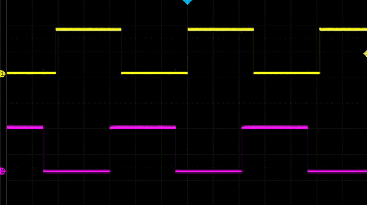

Phase-shifted PWM on SAMD21
I recently started working on a project that required me to output two separate PWMs from a microcontroller that needed to be phase shifted. That is, relative to each other the waves are offset in time:

Unfortunately, I couldn't find any good resources on how to accomplish this with my favorite 32-bit ARM microcontroller, the SAM D21, which is used in the Arduino Zero and Adafruit's M0 series. So I set out to figure this out - and with a little help from Twitter and friends I was able to get it working.
This method should also work with the SAM D51 and other chips in the SAM family with the TCC peripheral.
How PWM works on the SAM D21
In order to pull this off I first needed to understand at the hardware level how PWMs are generated. Arduino & friends really abstract this because there are several different ways to accomplish a PWM output and the peripheral that does this, the TCC, is extremely complex. The reason this is such a complex peripheral is that it's not just for generating PWMs - it can be used to control complex motor drivers and such!
Luckily, Shawn Hymel has a great blog post on creating PWM outputs using registers. This was my starting point for making this happen.
Getting a TCC to create a PWM output comes down to these steps:
- Enable the bus clock to the TCC.
- Wire up a peripheral clock to the TCC.
- Configure waveform generation for the TCC.
- Setup the frequency and duty cycle for the waveform.
- Configure the output pin and wire it up to the TCC.
- Start the TCC.
Configuring the TCCs
Since I want to output two waveforms, I need to configure two TCCs at once.
Here's the code for enabling the bus clock - if you're on Arduino, it's likely that the Arduino libraries have already done this. If you're on ASF4 or something like that, you'll definitely need to do this.
/* Enable the APB clock for TCC0 & TCC1. */ PM->APBCMASK.reg |= PM_APBCMASK_TCC0 | PM_APBCMASK_TCC1;
Next, you need to wire up a peripheral clock. In my case, I have GCLK1 configured as an 8Mhz clock. Your setup might be a bit different. It doesn't matter much which GCLK you use or what its frequency is, but it will affect how you calculate the frequency and duty cycle values.
/* Enable GCLK1 and wire it up to TCC0 and TCC1. */ GCLK->CLKCTRL.reg = GCLK_CLKCTRL_CLKEN | GCLK_CLKCTRL_GEN_GCLK1 | GCLK_CLKCTRL_ID_TCC0_TCC1; /* Wait until the clock bus is synchronized. */ while (GCLK->STATUS.bit.SYNCBUSY) {}; /* Configure the clock prescaler for each TCC. This lets you divide up the clocks frequency to make the TCC count slower than the clock. In this case, I'm dividing the 8MHz clock by 16 making the TCC operate at 500kHz. This means each count (or "tick") is 2us. */ TCC0->CTRLA.reg |= TCC_CTRLA_PRESCALER(TCC_CTRLA_PRESCALER_DIV16_Val); TCC1->CTRLA.reg |= TCC_CTRLA_PRESCALER(TCC_CTRLA_PRESCALER_DIV16_Val);
Next, you'll need to configure the waveform output for the TCCs. There's a handful of different waveform configurations you can use but in this case the simplest one, "Normal PWM", is the right one.
/* Use "Normal PWM" */ TCC0->WAVE.reg = TCC_WAVE_WAVEGEN_NPWM; /* Wait for bus synchronization */ while (TCC0->SYNCBUSY.bit.WAVE) {}; /* Use "Normal PWM" */ TCC1->WAVE.reg = TCC_WAVE_WAVEGEN_NPWM; /* Wait for bus synchronization */ while (TCC1->SYNCBUSY.bit.WAVE) {};
The way that normal PWM mode works is that the TCC will increment its COUNTon each tick. At the start, the output is low. Once COUNT equals a compare value, CC[n], it will switch the output to high. Finally, once COUNT is equal to the TCC's PER, it will reset count to zero and set the output to low again and repeat the cycle.
So this means to configure the PWM frequency and duty cycle you need to set the PER value based on the frequency and the CC[n] value based on the duty cycle. Here's an example:
/* Configure the frequency for the PWM by setting the PER register. The value of the PER register determines the frequency in the following way: frequency = GLCK frequency / (TCC prescaler * (1 + PER)) So in this example frequency = 8Mhz / (16 * (1 + 512)) so the frequency is 947Hz. */ uint32_t period = 512; TCC0->PER.reg = period; while (TCC0->SYNCBUSY.bit.PER) {}; TCC1->PER.reg = period; while (TCC1->SYNCBUSY.bit.PER) {};
I wanted the duty cycle to just be 50%, so I set the CC[n] register to half of the period. Which CC[n] register you set depends on which output pin you're using - more on that in a second:
/* n for CC[n] is determined by n = x % 4 where x is from WO[x] WO[x] comes from the peripheral multiplexer - we'll get to that in a second. */ TCC0->CC[2].reg = period / 2; while (TCC0->SYNCBUSY.bit.CC2) {}; TCC1->CC[1].reg = period / 2; while (TCC1->SYNCBUSY.bit.CC2) {};
Finally, you need to configure the output pins. This is relatively complex because of the whole pin multiplexing thing. In this case, I want to output TCC0's waveform to PA18 (D10 on the Arduino Zero and Feather M0) and TCC1's waveform to PA07 (D9 on the Arduino Zero and Feather M0).
First the easy part- set the pins to be outputs:
/* Configure PA18 and PA07 to be output. */ PORT->Group[0].DIRSET.reg = PORT_PA18; PORT->Group[0].OUTCLR.reg = PORT_PA18; PORT->Group[0].DIRSET.reg = PORT_PA07; PORT->Group[0].OUTCLR.reg = PORT_PA07;
Next is more complicated and requires some consulting with the datasheet. You have to configure the pin multiplexer for the pins to connect them to the TCC instances. Which pins can be assigned to which TCC instances is limited so you'll have to consult the scary pin multiplexing table datasheet to figure out the right stuff to put here.
/* Enable the peripheral multiplexer for the pins. */ PORT->Group[0].PINCFG[18].reg |= PORT_PINCFG_PMUXEN; PORT->Group[0].PINCFG[7].reg |= PORT_PINCFG_PMUXEN; /* Set PA18's function to function F. Function F is TCC0/WO[2] for PA18. Because it's an even numbered pin the PMUX is E (even) and the PMUX index is pin number / 2, so 9. */ PORT->Group[0].PMUX[9].reg = PORT_PMUX_PMUXE_F; /* Set PA07's function to function E. Function E is TCC1/WO[1] for PA07. Because this is an odd numbered pin the PMUX is O (odd) and the PMUX index is pin number - 1 / 2, so 3. */ PORT->Group[0].PMUX[3].reg = PORT_PMUX_PMUXO_E;
Whew, okay. So also note that the pin multiplexer function here determines the WO[x] and therefore determines which CC[n] to set for the TCC - PA18 is TCC0/WO[2] so you set CC[2] for TCC0 and PA07 is TCC1/WO[1] so you set CC[1] for TCC1.
Finally, you gotta enable the TCCs - this actually starts them counting and begins outputting the PWMs:
TCC0->CTRLA.reg |= (TCC_CTRLA_ENABLE); while (TCC0->SYNCBUSY.bit.ENABLE) {}; TCC1->CTRLA.reg |= (TCC_CTRLA_ENABLE); while (TCC1->SYNCBUSY.bit.ENABLE) {};
Alright, with all that there is now two perfectly synchronized square waves on the output:

Shifting the phase
Now that there's two PWM outputs working, we can talk about how to shift the phase around.
The idea is to manually set the second TCC's COUNT to a value other than 0
at the start. Setting this value will cause that TCC's output to be out of phase with the first TCC's by a factor of n / PER.
So for example, if I wanted the second square wave to be 90 degrees out of phase I'd add this before enabling the TCCs:
TCC1->COUNT.reg = period / 4;
Now the waveforms are out of phase:

Huzzah! Victory, right? Well, yes, if you don't ever want to change the phase relationship after starting the timers. I do - I want to be able to change the phase based on external input. So I had to dive a little deeper.
Modifying the phase after starting the TCCs
Unfortunately you can't modify the phase of TCC1 while the timers are running using the simple formula above. You have to take into account the current COUNT from TCC0. So the basic idea is:
- Read the value of
COUNTfrom TCC0. - Set TCC1's
COUNTto the read value plus a phase offset.
Simple potatoes, right? Well, there's one trick here: you can't just read the COUNT register. You have to ask the hardware to update the value for you. The way to do this is to send a command to the TCC. Here's how to do it:
TCC0->CTRLBSET.reg = TCC_CTRLBSET_CMD_READSYNC; while (TCC0->SYNCBUSY.bit.COUNT) {};
Now that the COUNT register has been synchronized you can read it and offset it for TCC1:
TCC1->COUNT.reg = (TCC0->COUNT.reg + phase_offset) % period;
Note that I also perform a % period. This keeps the COUNT from being above the PER register which would cause the timer to have to overflow before restarting - not ideal as that could take quite a while!
And that's it! With that you can actually change the phase dynamically! Check it out:

Wrapping up
That's all! Thanks for reading this and I hope it's helpful to some poor soul who's fighting with the PWM output on the SAMD21. Here's some resources if you want to read more about this sort of stuff.